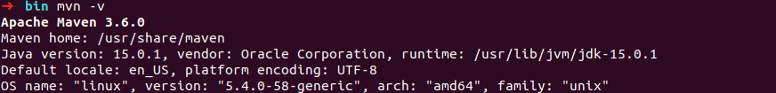
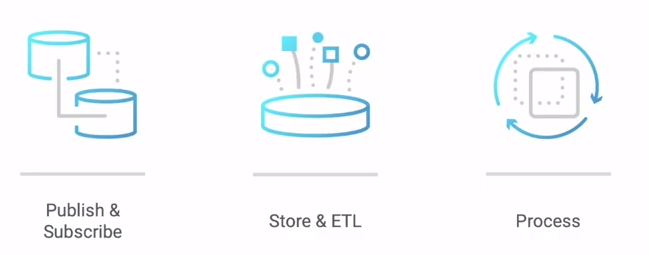
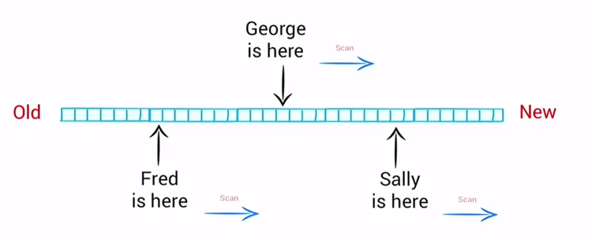
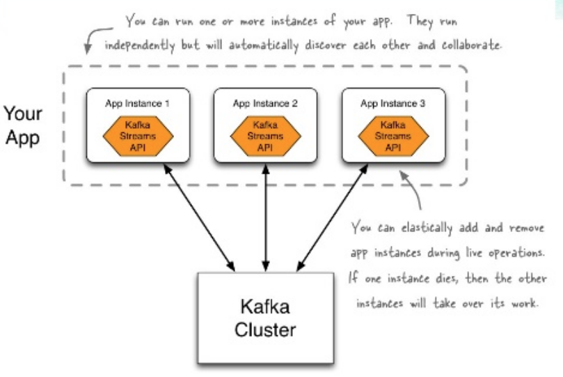
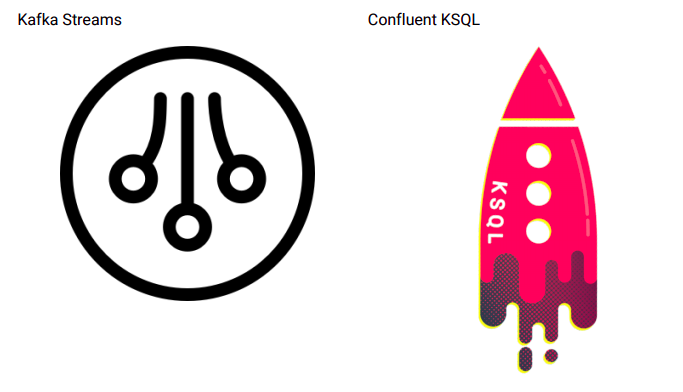
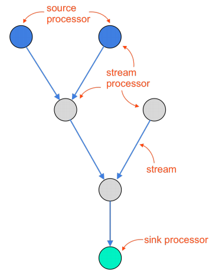
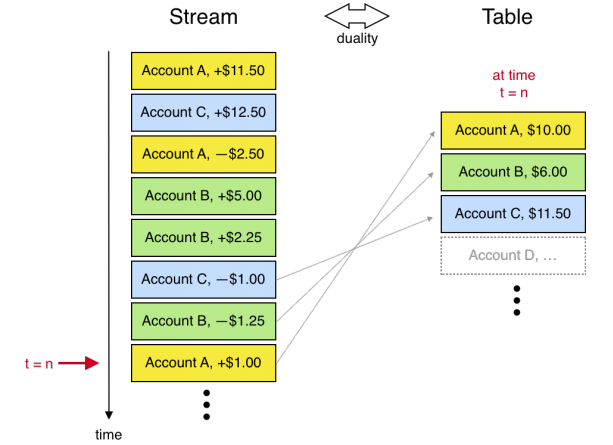
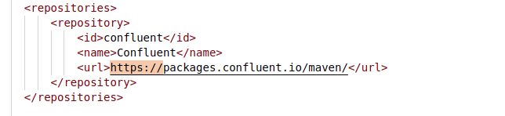
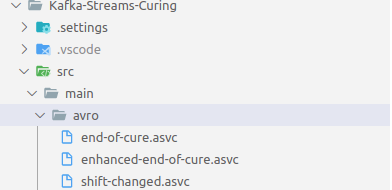
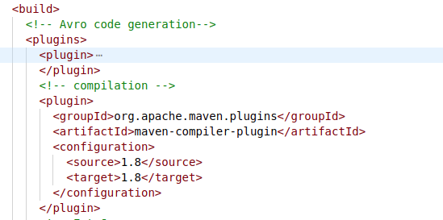

Coding4Fun #16
Kafka Stream

Pierre Plagnes
- Archi FS Execution Produit Fini
- Dev (.net, js, python...) la nuit
- Fondateur MUG In Clermont
Environment and Prerequisite
Prerequisite
- Docker Engine + Docker-compose cli
- Maven
Build your own Kafka Cluster
docker-compose -f docker/docker-compose.yml up
Install Maven
Based on the concept of a project object model (POM), Maven can manage a project's build, reporting and documentation
Download Maven
and unzip it somewhere for later use.
PS : You can add bin path in your system path to simplify usage

Kafka Stream Basics
Kafka
Topics
- Just a java lib
- Robustness & Scalability
- Powerfull
- Integration with kafka
- Stateful and stateless
Failover & Scalability
Stream processing

What can be used with Kafka
KSQL Sample
CREATE STREAM pageviews_enriched AS \
SELECT pv.viewtime, \
pv.userid AS userid, \
pv.pageid, \
pv.timestring, \
u.gender, \
u.regionid, \
u.interests, \
u.contact_info \
FROM pageviews_transformed pv \
LEFT JOIN users u ON pv.userid = users.userid;
KSQL Sample 2
CREATE table possible_fraud as
SELECT card_number, count(*)
FROM authorization_attempts
WINDOW TUMBLING (SIZE 5 SECONDS)
GROUP BY card_number
HAVING count(*) > 3
Start with KSQL when
- You don’t use Java/Scala
- New to streaming or Kafka
- Prefer a UI or REST API
- Use case addressed with SQL syntax
Start with Kafka Streams when
- You already use Java/Scala
- Need tight control over performance
- Need queryable state
- Use case not easily expressed with SQL
Processor topology
KStream vs KTable
Let's play
with kafka and streams
for our first sample, we will implement
- A end-of-cure event producer
- A shift-changed event producer
- A consumer for enhanced-end-of-cure event
- A stream to join end-of-cure and shift-changed
Create a end of cure producer
Source code is stored in src/end-of-cure-producerCreate a end of cure producer
Sample dotnet project in src/shift-change-producerCreate a enhanced end of cure consumer
Sample dotnet project is stored in src/enhanced-end-of-cure-consumerCreate a stream project
mvn archetype:generate -DgroupId=com.coding4fun.kafka.stream -DartifactId=Kafka-Streams-Curing -DarchetypeArtifactId=maven-archetype-quickstart -DinteractiveMode=false
Add confluent repository
Maven dependencies
https://search.maven.org
- org.apache.logging.log4j - log4j-slf4j-impl
- org.slf4j - slf4j-api
- org.apache.kafka - kafka-streams
- org.apache.avro - avro
- io.confluent - Kafka-streams-avro-serde
Adding avro generation plugin
https://avro.apache.org/docs/current/gettingstartedjava.htmlAdd avro definition in src/main/avro
Source generation
mvn clean generate-sourcesAdd import
import java.time.Duration;
import java.time.temporal.ChronoUnit;
import java.util.Map;
import java.util.Properties;
import com.coding4fun.kafka.models.*;
import org.apache.kafka.common.serialization.Serde;
import org.apache.kafka.common.serialization.Serdes;
import org.apache.kafka.streams.KafkaStreams;
import org.apache.kafka.streams.StreamsBuilder;
import org.apache.kafka.streams.StreamsConfig;
import org.apache.kafka.streams.Topology;
import org.apache.kafka.streams.kstream.Consumed;
import io.confluent.kafka.serializers.AbstractKafkaSchemaSerDeConfig;
import io.confluent.kafka.streams.serdes.avro.SpecificAvroSerde;
import static java.util.Collections.singletonMap;
Add some constants in app.java
static final String END_OF_CURE_TOPIC_NAME="end-of-cure";
static final String SHIFT_CHANGE_TOPIC_NAME="shift-change";
static final String ENHANCED_SHIFT_CHANGE_TOPIC_NAME="enhanced-end-of-cure";
private static final String DEFAULT_BOOTSTRAP_SERVERS = "localhost:9092";
private static final String DEFAULT_SCHEMA_REGISTRY_URL = "http://localhost:8081";
Add a getProperties method
private static Properties getProperties() {
Properties settings = new Properties();
settings.put(StreamsConfig.APPLICATION_ID_CONFIG, "coding4fun-stream");
settings.put(StreamsConfig.BOOTSTRAP_SERVERS_CONFIG, DEFAULT_BOOTSTRAP_SERVERS);
settings.put(AbstractKafkaSchemaSerDeConfig.SCHEMA_REGISTRY_URL_CONFIG, DEFAULT_SCHEMA_REGISTRY_URL);
return settings;
}
serdes object
Create seres object in main method
Map<String, String> serdeConfig = singletonMap(AbstractKafkaSchemaSerDeConfig.SCHEMA_REGISTRY_URL_CONFIG, DEFAULT_SCHEMA_REGISTRY_URL);
final Serde<String> stringSerde = Serdes.String();
final Serde<EndOfCure> enfOfCureSerializer = new SpecificAvroSerde<>();
enfOfCureSerializer.configure(serdeConfig, false);
Build topology
Add this in main method
StreamsBuilder builder = new StreamsBuilder();
builder.stream(END_OF_CURE_TOPIC_NAME, Consumed.with(stringSerde, enfOfCureSerializer))
.to(ENHANCED_SHIFT_CHANGE_TOPIC_NAME);
Topology topology = builder.build();
Kafka stream execution
Add this in main method
final KafkaStreams streams = new KafkaStreams(topology, getProperties());
streams.setUncaughtExceptionHandler((Thread thread, Throwable throwable) -> {
System.out.println(String.format("Something bad happened in thread {}: {}", thread, throwable.getMessage()));
streams.close(Duration.of(3, ChronoUnit.SECONDS));
System.exit(1);
});
streams.setStateListener((before, after) -> System.out.println(String.format("Switching from state {} to {}", before, after)));
streams.start();
log4j configuration
Create a log4j2.properties file under src/main/resources folder
status = error
dest = err
name = PropertiesConfig
property.filename = target/rolling/rollingtest.log
filter.threshold.type = ThresholdFilter
filter.threshold.level = debug
appender.console.type = Console
appender.console.name = STDOUT
appender.console.layout.type = PatternLayout
appender.console.layout.pattern = %d{HH:mm:ss.SSS} %-5level- %msg%n
appender.console.filter.threshold.type = ThresholdFilter
appender.console.filter.threshold.level = info
rootLogger.level = info
rootLogger.appenderRef.stdout.ref = STDOUT
Configure Maven build
Try a build
mvn compile
Play !
mvn package
mvn install assembly:assembly
Let's play with KSql
KSql with Docker-Compose
docker exec -i -t ksqldb-server /bin/sh
ksql http://ksqldb-server:8088